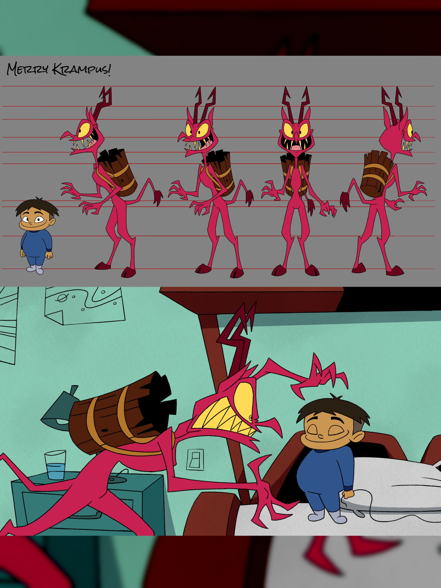
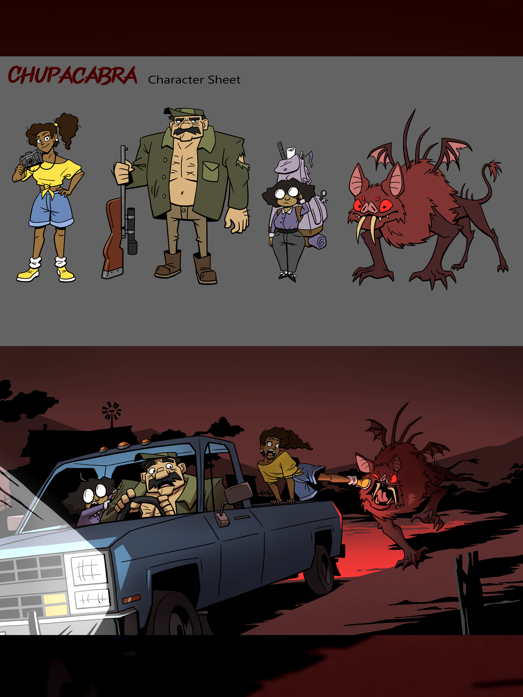
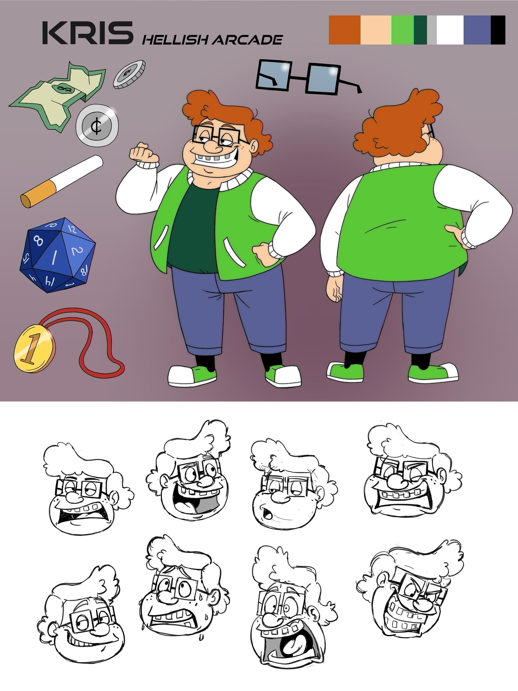

Cristina Urias - La Escalera
My name is Cristina (she/her), and I am a queer Mexican American animator and director from Riverside, California. You will most often find me drinking hot coffee and watching a good horror/thriller movie. I am a massive fan of early Pixar films like The Incredibles and shows like SpongeBob Squarepants. I just love how they are enjoyable to people of all ages. I hope to continue making engaging animations and telling stories that are not afraid to tackle darker subject matter.


